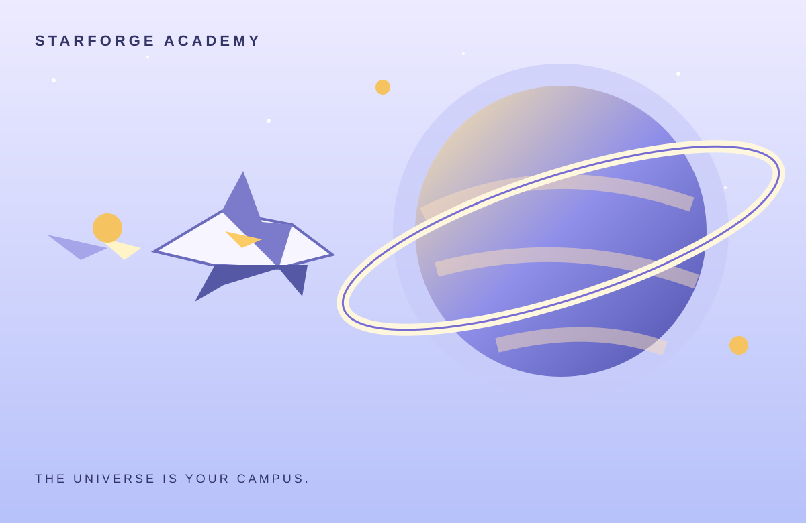

A TABLE FOR STRANGERS
Trade stories with other explorers, share discoveries, and leave a postcard for someone you have not met yet.
The academy has no final exam. It has a thousand little departures. Chart strange systems, build a ship that carries your ambitions, and discover why the stars are sending invitations.

CONCEPT / 008SPRING QUADRANT / YEAR 2289Select a frame to see what kind of explorer it turns you into.
Pick a destination. The map will tell you a little of what we know — and what we do not.
Trade stories with other explorers, share discoveries, and leave a postcard for someone you have not met yet.
Collect seeds from distant biospheres and build a greenhouse that feels like a pocket of home.
Optional lessons introduce navigation and ship systems through playful, hands-on experiments.
A closer look at the design decisions that make this world work — from its central fantasy to the details that give it texture.
Unexpected discoveries are shared through maps, postcards, and field notes instead of a stack of chores.
Customize cabins, garden modules, research benches, and little souvenirs from places you have visited.
Player discoveries enrich the shared atlas and open new routes for the whole academy.
This is an interactive portfolio concept. Explore the page, test the controls, and imagine where the world could go next.